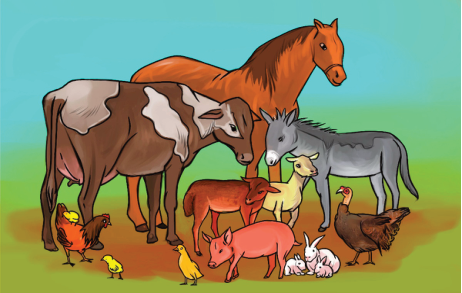

Chapter
Six
General principles and
practices of livestock
production
Introduction
This chapter will introduce you to the principles and practices of raising and
keeping livestock. The competencies developed from this chapter will enable you
to apply the principles and practices in raising any livestock for commercial and
domestic purposes.
Think
“A livestock keeper with just ten improved cows per herd can produce
more milk than one with twenty unimproved cows per herd.”
Concept of the principles and practices of livestock production
Livestock refers to the domesticated animals raised in an agricultural setting
in order to provide labour and diversified products for economic purposes
(Figure 6.1). Livestock production is the science and art of keeping livestock.
As a science, livestock production follows a particular set of rules which, when
followed accordingly, can lead to the best performance in livestock production.

Figure 6.1: Some classes of livestock